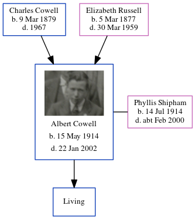

Albert Percy Cowell 1914 - 2002
[ Home ] | [ Calendar ] | [ Surnames Index ] | [ Errors ] | [ Family History ]An upholsterer and the youngest of 4 children of Charles Cowell (a newsagent) and Elizabeth Russell, Albert Cowell, the first cousin once-removed on the mother's side of Nigel Horne, was born in Westhampnett, Sussex, England on 15 May 19141,2,3,4 and. He married Phyllis Shipham (with whom he had 1 surviving child, ) in South Bersted, Chichester, Sussex, England on 6 Jun 19385.
During his life, he was living at Full Cottages, Highfield Road, Bognor in Westhampnett in 19216 and on 19 Jun 19217; and at 65 Highfield Road, Bognor Regis, Sussex on 29 Sept 19391.
He died on 22 Jan 2002 in Chichester3.
Parents
- Charles Percy was born on 9 Mar 1879
- Elizabeth Ellen was born on 5 Mar 1877
Citations
- 1939 Register - Findmypast (was recorded at this address)
- England & Wales deaths 1837-2007 - Findmypast
- England & Wales, Death Index: 1984-2005 Online publication - Provo, UT, USA: The Generations Network, Inc., 2007.Original data - General Register Office. England and Wales Civil Registration Indexes. London, England: General Register Office. © Crown copyright. Published by permission of the Cont
- England & Wales, FreeBMD Birth Index, 1837-1915 Online publication - Provo, UT, USA: The Generations Network, Inc., 2006.Original data - General Register Office. England and Wales Civil Registration Indexes. London, England: General Register Office. © Crown copyright. Published by permission of the Cont
- England & Wales Marriages 1837-2005 - Findmypast
- 1921 Census Of England & Wales - Findmypast
- 1921 Census Of England & Wales - Findmypast (was age 7 and the son of the head of the household)
Media
Albert Percy Cowell
Chichester Observer 30 January 1935

Bognor Regis Observer 8 June 1938

England & Wales deaths 1837-2007 - BMD/D/2002/1/84873664
England & Wales births 1837-2006 Transcription - BMD-B-1914-2-AZ-000331-091
1939 Register Transcription - TNA-R39-2577-2577B-013-35
1939 Register Image - TNA-R39-2577-2577B-013
England & Wales marriages 1837-2008 - BMD/M/1938/2/AZ/000305/053
Family Tree
Map
Generated by ged2site. Last updated on Jul 3, 2024
Known Issues
Location for 19 Jun 1921 (Full Cottages, Highfield Road, Bognor, Westhampnett, Sussex, England) differs from mother's (Full Cottages, Highfield Road, Westhampnett, West Sussex, England)
Date of residence (1921) differs from mother's in same year (19 Jun 1921)
Location for 19 Jun 1921 (Full Cottages, Highfield Road, Bognor, Westhampnett, Sussex, England) differs from mother's (Full Cottages, Highfield Road, Westhampnett, West Sussex, England)
19 Jun 1921: Not living with either parent in childhood when aged 7